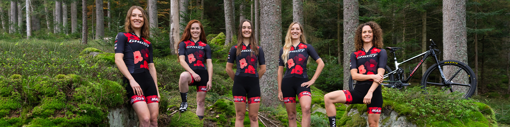

GHOST Bikes has strong ties to the sport of mountain biking and has been a competent partner for international top riders for many years. After several professional engagements in competitive racing, GHOST founded its own Factory Racing Team in 2011. Its goal: to establish creative cooperation between manufacturer and athletes in the racing world.
GHOST Bikes has strong ties to the sport of mountain biking and has been a competent partner for international top riders for many years. After several professional engagements in competitive racing, GHOST founded its own Factory Racing Team in 2011. Its goal: to establish creative cooperation between manufacturer and athletes in the racing world..